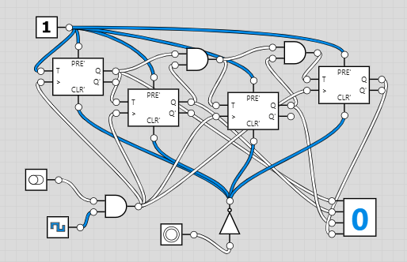

Лічильник з перенесенням (Ripple Counter)

Лічильник з перенесенням — це асинхронний лічильник, який використовує каскад тригерів для підрахунку імпульсів. Він працює в двійковій системі числення.
Як працює
Кожен тригер переключається на спадному фронті сигналу від попереднього тригера. Це створює ефект "перенесення", звідки і назва.
Двійковий підрахунок
З 4 тригерами лічильник може підраховувати від 0 до 15 (2^4 - 1 = 15).
| Десяткове | Двійкове |
|---|---|
| 0 | 0000 |
| 1 | 0001 |
| 2 | 0010 |
| 3 | 0011 |
| 4 | 0100 |
| 5 | 0101 |
| 6 | 0110 |
| 7 | 0111 |
| 8 | 1000 |
| 9 | 1001 |
| 10 | 1010 |
| 11 | 1011 |
| 12 | 1100 |
| 13 | 1101 |
| 14 | 1110 |
| 15 | 1111 |
Після 15 лічильник повертається до 0.